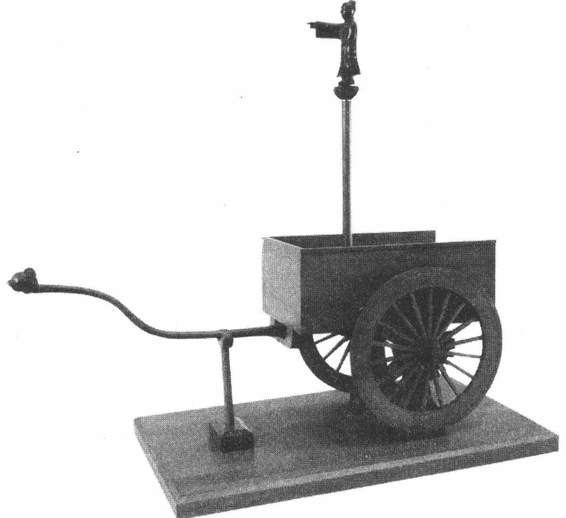
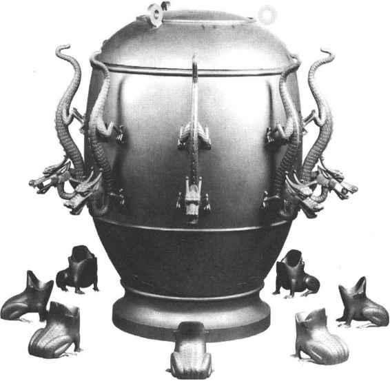

中国古代在机械方面的创造发明，亦是中国文化史上璀璨光辉的一个组成部分。在风力、水力、热力机械及齿轮系传动等各机械方面，中国古代都有不少创造发明，为人类文明做出了极有价值的贡献。关于农业机械、天文仪器、纺织机械、印刷机械、交通机械、军事机械等方面的成就，已在各有关章节述及，这里仅介绍其他方面的几个突出成就，以见中国古代机械发明之一斑。
又称司南车，相传为黄帝所作，亦有说周公所作，实际上大约是西汉问世。《西京杂记》记载有：“司南车，驾四，中道。”东汉的张衡、三国时魏国的马钧都曾造过指南车，其后历代史书差不多都有指南车的记载。如《晋书·舆服志》说：“司南车，一名指南车，驾四马，其下制如楼，三级；四角金龙衔羽葆；刻木为仙人，衣羽衣，立车上，车虽回运而手常南指。”《宋书·礼志五》说：“其制如鼓车，设木人于车上，举手指南。车虽回转，所指不移。”《南齐书·祖冲之传》说：“冲之改造（指南车之）铜机，圆转不穷而司方如一。”但是，这些记载都过于简略，对其构造、原理都未述及，而且各代所造之指南车都很快流失。也即是说，各代都是在无资料记载和实物的情况下重新制造。只是到宋代的史籍才对燕肃和吴德仁制造的指南车有较详细的记述。燕肃曾任宋仁宗时的工部郎中，他于天圣五年（1027）在“……至国朝，不闻得其制”［42］的情况下，“创意成之”，造了一部指南车。吴德仁曾任宋徽宗时的内省侍，他于大观元年（1107）对燕肃所造之指南车进行了改进。
《宋史·舆服一》中对燕肃、吴德仁所造指南车的大小、规格、形制，以及内部的齿轮结构、齿轮大小和齿数等都有相当详细的记述。根据这些记载和近人的研究，我们可以对指南车的结构和原理有一个大致的了解。（图17—18）指南车的车身为一辕双轮车，车箱为重构结构，上立一木人，引臂南指。车箱内部设置有一套可自动离合的齿轮传动机构。当车子行进中偏离正南方向，向东（向左）转弯时，车辕前端向左移动，而后端向右（向西）移动，即将右侧传动齿轮放落，使车轮的转动能带动木人下方的大齿轮向右转动，恰好抵消车辆向左转弯的影响，使木人手臂仍指南方。当车子向西（向右）转弯时，则左侧的传动齿轮放落，使大齿轮向左转动，以抵消车子右转的影响。而车子向正前方行进时，车轮与齿轮系是分离的，因此木人手臂所指的方向不受车轮转动的影响。如此，不管车子的运动方向是东西南北，或不断变化，车上木人的手臂总是指向南方，起着指引方向的作用。

图17-18 魏指南车模型
即利用车轮的转动距离而自动报告车行里程的车子，其原理和作用类似于现汽车上的计程表。关于记里鼓车的最早文字记载亦是在《西京杂记》中，其云“记道车，驾四，中道”。其后各代史书亦都有记述，《晋书·舆服志》云：“记里鼓车，驾四，形制如司南，其中有木人执槌向鼓，行一里则打一槌”；《宋书·礼五》云：“（记里车）制如指南，其上有鼓，车行一里，木人辄击一槌”；五代马缟所注的《中华古今注》亦曰：“记里鼓车，所以识道里也，谓之大章车。起于西京，亦曰记里车。车上有二层，皆有木人焉。行一里下一层击鼓；行十里上一层击钟。”但如指南车的命运一样，记里鼓车也是每次造后即很快失传，记载也是过于简略。
《宋史·舆服一》记有天圣五年内侍卢道隆和大观元年吴德仁所造的记里鼓车，对车子的形制、大小、齿轮传动结构等都有较详细的记载。其制为独辕双轮车，车箱分上下两层，下层有木人执槌司鼓，上层有木人执槌司镯（或钲）。车箱里设置有一套减速齿轮系，并分别与上下两木人相连。当车子每行走一里时，控制下层木人的齿轮转动一周，木人击鼓一次；当车子每行走十里时，控制上层木人的齿轮转动一周，木人击镯（或钲）一次，从而达到报告行程里数的效果。
三国时马钧所创制。当时，有人送给魏明帝一木制玩具，上有百戏的造型，形象优美，制作精巧，但却是静止固定的，不会活动。马钧便对之进行改制，他用木料做了一个大原动轮，平放于地上，用水力驱动，原动轮便会带动戏中的各种造像活动起来。“设为女乐舞象，至令木人击鼓吹萧；作山岳，使木人跳丸掷剑，缘倒立，出入自在；百官行署，舂磨斗鸡，变巧百端。”［43］“水转百戏”的具体构造现已无从得知，但从其能使各种戏中的造型活动，可推断其内部一定运用有一套复杂的齿轮系以及凸轮、连杆等传动机构。水转百戏所达到的机械水平，即使在今天看来也是令人惊叹的。
指南车，记里鼓车，水转百戏，唐、宋、元时的水运天文仪器，明代的五轮沙漏，以至各种农用的水转连磨等等，均结构复杂，构思灵巧，反映了中国古代已经对齿轮系的传动原理有着相当深刻的认识，也体现了中国古代高超的设计思想和创造才能。
东汉张衡于公元132年发明，为世界上第一架观测地震的仪器，李约瑟称之为“地震仪的鼻祖”［44］。地动仪“以精铜铸成，员（圆）径八尺，合盖隆起，形似酒尊”。其内部有精巧的结构，中间为“都柱”，相当于一种倒立型的震摆；周围分“八道”，即按八个方向装置的八组机械装置。外面相应八个方向各设一条口含铜珠的龙，龙头下各有一只蟾蜍张口向上。一旦发生较强的地震，“都柱”便会因震动失去平衡而触发地震方向的机构，该向的龙口即张开，使铜珠落入蟾蜍口中，“振声激扬”，观测者就能测知何时、何方向发生了地震。［45］据记载，地动仪曾成功地记录到公元138年甘肃发生的一次强震，证明了地动仪的准确性和可靠性。（图17—19）

图17-19 张衡地动仪模型
在金属冶炼中，为了使燃料充分燃烧，以提高炉温，一般都装设有鼓风机械。最早的鼓风器称为橐，是一种皮囊。把多个橐排在一起称排橐，用马力、人力、水力推动就称马排、人排、水排。水排是东汉时南阳太守杜诗于公元31年发明的，用于鼓铸农器，收到了“用力少，见功多，百姓便之”［46］的效果。三国时韩暨在魏国官营冶铁作坊进行推广，以代替马排、人排。由于鼓风器何时由皮橐发展为风扇，现尚不清楚，故杜诗、韩暨的水排是用皮橐或风扇，结构如何，不得而知，但至迟在北宋时，木风扇已取代皮橐。北宋的《武经总要》中的行炉，元代王祯《农书》中的水排，都用的是水风扇。书中的水排图，有立轮式和卧轮式两种，是用水作动力推动轮子旋转，进而拉推风扇以鼓风，应用的是通过轮轴、拉杆，或者传动带，把圆周运动改变为直线往复运动的机械原理。
中国在鼓风技术方面最重要的发明，是活塞式风箱。活塞式风箱可能出现于唐代或宋代。公元1280年印制的《演禽斗数三世相书》中，刊载有一幅世界上最古老的双动式活塞风箱图，相传该书是唐初袁天罡所撰著的，宋代初次刊行。明代《天工开物》中所载的活塞式风箱，与此类似。活塞式风箱正逆行程都作有用功，每行程中一端排气鼓风，另一端同时吸取等量空气，因而能提供连续风流，提高鼓风效率，是鼓风技术上的重大进步。欧洲直至公元1716年方发明了类似的双动往复式水泵，为后来的活塞式机械打开了道路。
大约发明于唐代。唐时的“影灯”可能即是走马灯，宋代称马骑灯。《全唐诗》崔液《上元夜六首》之二：“神灯佛火百轮张，刻像图形七宝装。影里如闻金口说，空中似散玉毫光”；宋范成大《石湖居士诗集》卷二十三《上元纪吴中节物俳谐体三十二韵》的“转影骑纵横”，生动地为人们描绘了走马灯的形象。走马灯的构造是在一根立轴上部横装一个斜翼系统和叶轮，立轴下端附近则装一盏灯或一支烛。灯（或烛）点燃后，上方空气受热膨胀，密度降低，热空气即上升，而冷空气由下方进入补充，产生空气对流，从而推动叶轮旋转，并带动与立轴相连的各种图像转动。走马灯的制作原理，与现代燃气机相一致，可称之为燃气机的始祖。遗憾的是，中国古代一直把其作为玩物，没有能进一步加以研究，使之走向实际应用。欧洲在公元1550年发明了类似的燃气轮，用于烤肉，以后随着工业革命的浪潮，很快得到发展，在工业生产中被广泛地应用。